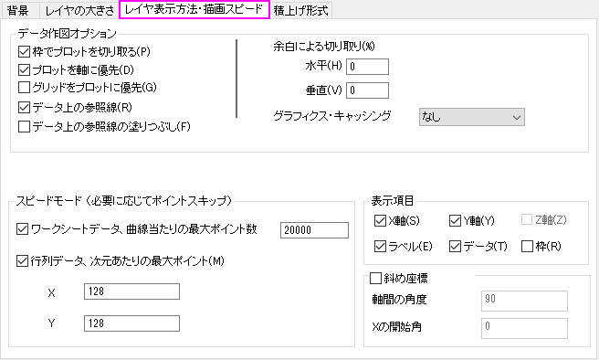
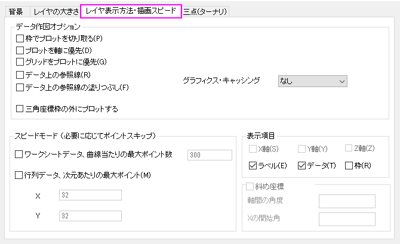
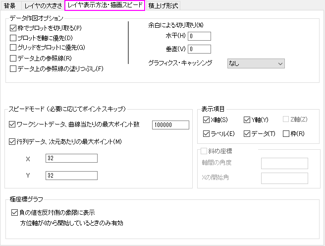
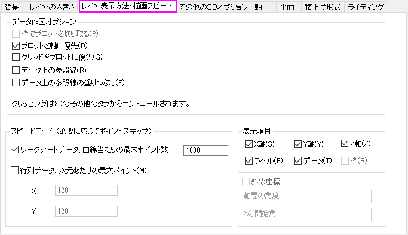

関連する動画はこちら:Correcting Font Size in Multilayer Graphs
関連する動画はこちら:Correcting Font Size in Multilayer Graphs
 関連する動画はこちら:Correcting Font Size in Multilayer Graphs
関連する動画はこちら:Correcting Font Size in Multilayer Graphs
作図の詳細ダイアログの レイヤ表示方法タブでは、テキストのスケーリングや軸、軸ラベル、ラベル、データの表示、そして特定のデータ描画に関するオプションを指定できます。
|  |  |
| 一般的なレイヤ表示/描画スピードタブ | 三点グラフのレイヤ表示方法/描画スピードタブ |
|  |  |
| 極座標のレイヤ表示方法/描画スピードタブ | 3Dグラフのレイヤ表示方法/描画スピードタブ |
| 枠でデータを切り取る |
このボックスにチェックされていると、余白による切り取りに示されたパーセンテージの値以下の、レイヤ枠を超えたデータを非表示にします。レイヤ枠は軸スケールの範囲で成り立ちます。
テキストラベルや他のグラフオブジェクトのクリッピングについては、オブジェクトのクリッピング をご覧ください。 | ||
|---|---|---|---|
| プロットを軸に優先 |
データプロットとシンボルを軸の前面(手前)に表示します。ほとんどのテンプレートがデフォルト(チェックなし)で軸の背面にデータを表示する設定になっています。 Note: グラフ軸上を右クリックすると、同様の設定が行えます。 | ||
| グリッドをプロットに優先 |
データプロットとシンボルを軸の前面(手前)に表示します。 Note: グラフ軸上を右クリックすると、同様の設定が行えます。 | ||
| データの上の参照線 |
データのプロットやシンボルの上に参照線を重ねて表示します。 Note: グラフ軸上を右クリックすると、同様の設定が行えます。 | ||
| 三角座標枠の外にプロットする |
このチェックボックスは、元のグラフが三点グラフの時のみ利用可能です。 このチェックを付けると、三角形の軸の外側にデータポイントを表示します。 | ||
| 余白による切り取り (%) |
水平と垂直の余白を切り取ります。 | ||
| グラフィックスキャッシング |
グラフィックス・キャッシングは、2Dグラフレイヤがリフレッシュせずに再描画する必要がある場合に使用されます。 例えば、グラフウィンドウが他のウィンドウと重なっていて、再び前面に表示する場合やウィンドウの大きさが変更される場合などです。
|
|
Note: ラスターキャッシュモードでグラフのサイズを変更すると、グラフのピクセルが粗く見える場合があります。 このような場合には、Originのメニューからウィンドウ：リフレッシュを選択して、表示を修復します。 |
| 負の値を反対側の象限に表示
方位軸が0から開始しているときのみ有効 |
負の方位値を持つデータの場合、このチェックボックスを選択すると、反対側の象限に負の値を表示します。この場合、方位軸は0から開始していなければなりません。 |
|---|
グラフレイヤの再描画スピードを速めるために、グラフィックイメージキャッシングの機能だけでなく、Originのスピードモードを使うことができます。 スピードモードでは、グラフレイヤ中に表示されるデータポイントの数を制御することができます。 このオプションは、大きなデータセットを操作していて、画面再描画のスピードやプロットの細かなデータを除去して表示したい場合に大変役に立ちます。
スピードモードが有効になっていると、レイヤアイコンが赤色で表示され、スピードモードオンというウォーターマーク(透かし)がレイヤに表示されます。この透かしは、グラフを印刷したり、コピーしたり、エクスポートする際には含まれません。
ワークシートデータから作成したプロットに対しては
行列データまたは仮想行列データから作成した3Dプロットに対しては
|
Note:
|
| X 軸/Y 軸/Z 軸 |
チェックを外すとレイヤにあるそれぞれの軸を非表示にします。表示するにはそれぞれの軸を選択します。 |
|---|---|
| ラベル |
レイヤ内にあるすべての軸タイトル、矢印、テキストラベル、描画オブジェクト、テキストラベル、オブジェクトを非表示にします。 ラベルチェックボックスのチェックを外していると、印刷出力時にも非表示となります。 |
| データ |
レイヤ内のすべてのデータプロットを非表示にします。 データチェックボックスのチェックを外していると、印刷出力時にも非表示となります。 |
| 枠 |
レイヤ枠を表示するかどうか指定します。3Dグラフでは、このオプションは利用できません。 |
デカルト座標の2Dグラフでのみ利用できます（一般のレイヤ表示方法・描画スピード）。ボックスにチェックを付けて、それぞれのボックスに整数値を入力します。
| 軸間の角度 |
XとY軸間の内部角度です。 |
|---|---|
| Xの開始角 |
正の値を指定すると、X軸が反時計回りに回転します。 |